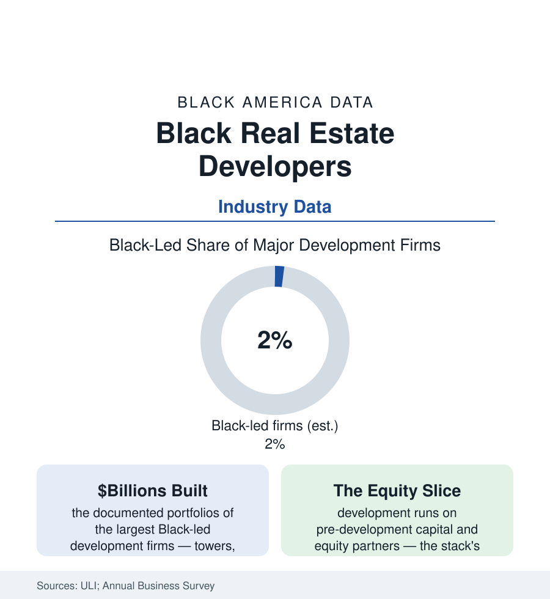

Black Business
Black Real Estate Developers: Building at Scale Against the Capital Stack
Black-led firms develop billions in projects — and hold a sliver of the industry's deal flow. The developer census, the capital stack's gates, and the firms closing them anyway.

Real estate development is where the census section's land and the business section's capital meet in physical form — and the Black developer's data describe an industry of demonstrated giants and structural scarcity: a population of Black-led development firms countable in the low hundreds nationally, a handful at institutional scale with billions in completed projects, and a deal flow — the entitlements, the public land dispositions, the equity partnerships — whose allocation the industry's own diversity reports describe in the low single digits. The developers who exist have built landmarks. The data question is the pipeline behind them. This article reads the development file.
The Population: Giants, Regionals, and the Missing Middle
The trade record names the top of the pyramid readily — the largest Black-led firms (among them the nation's biggest African American development company by the trade counts, with a portfolio of towers and mixed-use districts across the major markets; the Los Angeles, Chicago, Detroit, Atlanta, and New York firms whose projects anchor their cities' skylines and stadium districts) — because the count at scale is small enough to name. Below them sits the regional tier (community-scale developers, many rooted in the nonprofit and CDC world of the housing file — the church-linked and neighborhood development corporations whose projects are the Black neighborhoods' new housing, retail, and cultural buildings) and the thin middle (the mid-size commercial developers between the CDC and the tower — the tier the industry data show thinnest, where firms must carry institutional-scale risk without institutional-scale balance sheets). The professional associations (the Real Estate Executive Council — the industry's Black executive network, founded 2003 — and the African American Real Estate Professionals chapters) function as the tier's connective tissue and its informal census.
The Capital Stack: Where the Gates Stand
Development's financing is a stack, and its data gate at every layer: the pre-development money (the site control, architects, and entitlement legal bills — hundreds of thousands to millions spent before a construction loan exists, raised from the developer's own balance sheet and relationships — the wealth file's most direct industrial consequence); the equity layer (the institutional partners — pension funds, REITs, family offices — whose manager rosters the Knight-style census work finds as concentrated as asset management's whole); the debt layer (construction lending's relationship economics — the community banks of the banking article at small scale, the regionals and nationals at tower scale, their appraisal inputs carrying the appraisal file's documented discounts into the deal math); and the public layer (the land dispositions, tax abatements, TIF districts, and LIHTC allocations through which cities choose their developers — the one layer where public policy holds an explicit lever, and where the set-aside and participation programs' data (minority-developer requirements in several major cities' recent land deals) are now generating a measurable cohort). The entitlement gauntlet itself (zoning, hearings, the years of carry) prices time — and time, at a thin balance sheet, is the scarcest input of all.
The Public and Community Development Tier
The tier where Black developers lead most visibly is the public-purpose one, and its project data are substantial: the HOPE VI and Choice Neighborhoods redevelopments (Black-led and CDC developers rebuilding the public-housing geographies of the housing file), the cultural and institutional builds (the museums, HBCU facilities, and church-anchored mixed-use projects of the cities section), the stadium and arena districts' participation deals, and the land-bank and Black-developer cohort programs several cities now run (pre-development capital funds, shared back-office and bonding support, disposition preferences) whose early cohorts' project completions the program evaluations track. The faith-based development wave (the Black church as developer — the congregations of the religion article converting their land banks into housing and commercial space, with technical-assistance intermediaries professionalizing the tier) is the current decade's growth segment in the project data, joining the oldest Black landholding institution to the newest housing finance.
Reading the Development Data
Billions built by a nameable few, a missing middle behind them, and a capital stack gated at every layer by the balance-sheet history the wealth data record: development is where the atlas's abstractions pour concrete. The buildings in the cities section's skylines say the capability was never the scarce resource. The scarce resource was the first dollars — the pre-development check that decides whose name goes on the fence. The cohort programs now writing those checks at public scale are the file's live experiment, and their completion data will be this article's next edition.
More in Black Business
Black-Owned Businesses: Counts, Receipts, and the Representation Gap
About 161,000 Black-owned employer firms and three million solo ventures: how the Census Bureau counts Black business ownership, where firms concentrate, and the gap between population share and business share.
Black Median Net Worth: The Wealth Gap in Federal Reserve Data
The Federal Reserve puts Black median family net worth at $44,900, against $285,000 for White families — about 16 cents on the dollar. The widest gap in economic data.
Black Buying Power: The $1.8 Trillion Consumer Economy
Black buying power is estimated at about $1.8 trillion — larger than the economy of most nations. What the figure measures, who produces it, and what it buys.
Source: Urban Land Institute and industry diversity reports; U.S. Census Bureau Annual Business Survey; Commercial Real Estate Development Association; firm and trade-press records.